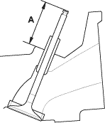

- Insert the intake and exhaust valves in the head and measure valve stem installed height (A).
Intake Valve Stem Installed Height:
Standard (New):
40.8 - 41.0 mm
(1.606 - 1.614 in.)
Exhaust Valve Stem Installed Height:
Standard (New):
54.6 - 54.8 mm
(2.150 - 2.157 in.)

- If valve stem installed height is over the standard, replace the valve and recheck. If it is still over the standard, replace the cylinder head; the valve seat in the head is too deep.